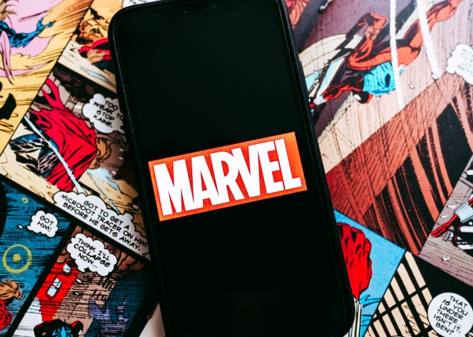
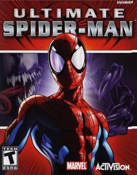
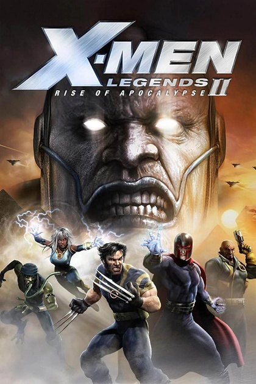

Marvel, Spider-Man and X-Men characters, artwork and game titles are the property of Marvel and their respective publishers. Shown to document work by Brian Selzer.
Led licensed mobile operations, with P&L visibility, across a portfolio of more than 25 mobile titles.
My roleOperating and business leadership of the licensed mobile portfolio.
25+Mobile titles
Qualifies me to leadLicensed-IP product strategy and portfolio P&L for entertainment companies moving onto a new platform.
Read the case
- Context
- Marvel’s characters were recognized worldwide, and mobile was becoming a main way people played.
- Challenge
- Marvel had one of the most powerful fandoms in the world and no repeatable way to turn that passion into regular mobile play. The IP was strong. The participation layer was thin.
- My role
- Ran the Marvel mobile business at Hands-On Mobile: worldwide launches, Marvel licensing, and coordination with the studios building the games. P&L visibility, working alongside the studio heads.
- What was built
- A portfolio of more than 25 mobile titles on Marvel’s characters, including Spider-Man, X-Men, Fantastic Four and Hulk.
- Evidence
- Needed: one sourced result Brian can stand behind (chart rank, release, award or partner statement).
- Confirm wording
- Confirm the public title and wording of the role with Brian.
- Point of view
- Fandom keeps people coming back. The mistake is treating it as a marketing layer instead of a participation system.
- Relevance today
- The same questions come up with any licensed IP and any new platform: what to build, with whom, and how it pays for itself.